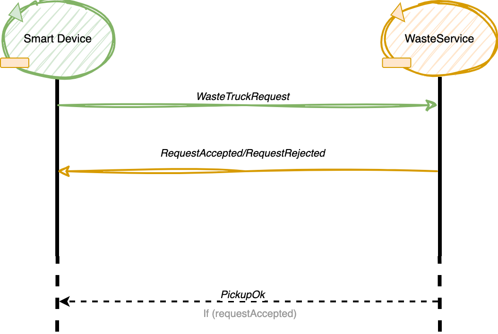
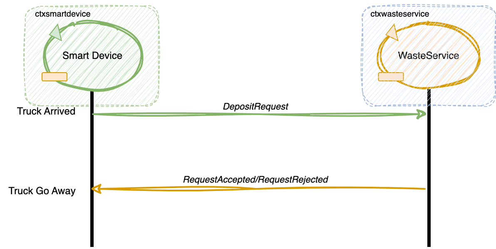
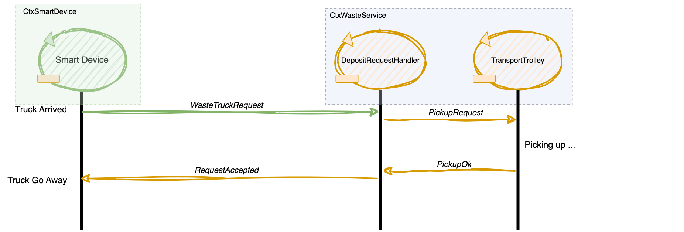
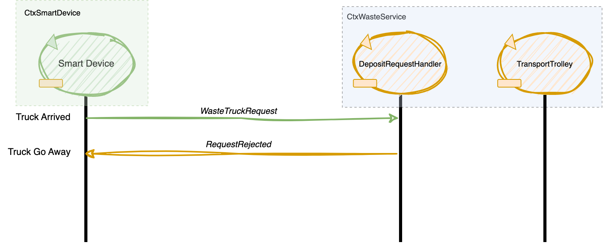

Introduction
Progetto finale di ISS che consiste nel realizzare un sistema di gestione dei rifiuti in cui un robot svolge il compito di trasportare i materiali dal camion ai relativi contenitori di smistamento. Attualmente, ci concentriamo su una fase preliminare di analisi dei requisiti, che consiste nel comprendere le esigenze del cliente e tradurle in una forma formalizzata e strutturata.
Requirements
Si riporta la pagina di requisiti del committente: Waste Service 22.pdf
QActor Metalanguage (QAK)
Nella seguente analisi dei requisiti è risultato necessario l'utilizzo di un modello di formalizzazione che permettesse la definizione di eventi, sintassi a scambio di messaggi e architetture a componenti distribuiti.
Si farà riferimento al linguaggio e metamodello QAK, basato sul paradigma ad attori, per realizzare e definire il modello dell'architettura secondo le esigenze d'isolamento dei componenti, sfruttando i vantaggi dell'interazioni asincrone a scambio di messaggi in quanto i linguaggi popolari come Java o simili non consentono l'astrazione di questi concetti in maniera semplice e intuitiva.
Il
In allegato la documentazione che lo riguarda QAK-Document
Requirement analysis
Service Area (SA )
Area rettangolare priva di ostacoli, che viene formalizzata con la definizione di un rettangolo.
Nella
- Indoor
- Plastic Box
- Glass Box
- Home
Le misure della
Dunque nel seguente documento si farà riferimento alle misure della stanza come note denominandole "X" e "Y", rispettivamente per il lato orizzontale e verticale della
Nel caso comunque non fosse possibile reperire le misure sarà possibile utilizzare il Software fornito dalla nostra Software House per la misurazione della stanza con l'utilizzo del solo
Si riporta il riferimento al documento del progetto: unibo.mapperQak22.
Rectangle (x, y)
x: Lunghezza
y: Altezza
Enum Position = {Indoor, PlasticBox, GlassBox, Home}
MaxGB, MaxPB
MaxGB è la capacità massima relativa al GlassBox.
MaxPB è la capacità massima relativa al PlasticBox.
Entrambe formalizzate come segue:
val MAXGB : Float
val MAXPB : Float
Per il monitoraggio della capienza corrente formalizziamo le seguenti variabili:
var contGB : Float
var contPB : Float
DDR Robot
Con
Non avendo a disposizione un
Questo simula in ambiente virtuale, le caratteristiche principali e i comportamenti del
Essendo il Wenv22 un simulatore di un
Il
Facendo riferimento ai componenti implemntati nella nostra Software House, la gestione del
Dunque nella nostra archietettura inseriremo il componente
BasicRobot22
Definiamo in breve il
- Esegue comandi-base di spostamento, con argomento:
MOVE = w | s | l | r | h - Permette l'esecuzione di step, rispondendo con stepdone o stepfail
- È in grado di utilizzare diversi tipi di robot (virtuali e reali) costruiti ciascuno con una propria tecnologia
- È in grado di percepire e gestire informazioni provenienti dall’ambiente
Nel seguente file la documentazione completa:
Gestione delle collisioni
La gestione delle collisioni avviene attraverso un sonar on-board presente sul DDR.
Significa che il DDR sarà predisposto di un rarard frontale e utilizzabile rilevare ostacoli/muri davanti a lui.
Deposit Action
La
- Indoor
- PlasticBox/GlassBox
- Home
La
- Home -> Indoor
- Indoor -> PlasticBox/GlassBox
- PlasticBox/GlassBox -> Home
Enum TTRoutes = {HI, IP, IG, PH, GH}

Da requisiti va considerato inoltre che il WasteService potrebbe ricevere un nuova richiesta mentre sta ancora eseguendo la
- Home/PB/GB -> Indoor
- Indoor -> PlasticBox/GlassBox
- PlasticBox/GlassBox -> Indoor/Home
Enum TTRoutes = {HI, IP, IG, PH, GH, PI, GI }
Date le seguenti ulteriori informazioni:
Service Aera è rettangolare e priva di ostacoli- Il
DDR Robot è dotato di un sonar on-board utilizzabile per le collisioni - Il Software per il movimento del nostro
DDR Robot permette la rotazione di 90°
Il percorso ottimale utilizzabile è quello fatto percorrendo il perimetro della stanza, dunque si riporta la sua formalizzazione:
Enum TTRoutes = {HI, IP, PI, PH, PG, GP, GH}
Transport Trolley (TT )
Il
Fisicamente è formalizzato come un quadrato di dimensione RD.
val RD : float
Square: (l*l)
l= RD
La sua formalizzazione Software può esssere rappresentata come un automa a stati finiti, definito come segue tramite il linguaggio QAK:
Formalizzazione a stati finiti
QActor transporttrolley context ctxwasteservice {
[#
val name = "TransportTrolley"
var materialType = ""
#]
State s0 initial{
...
}
Goto waiting
State waiting {
...
}
Transition t0 whenRequest pickupReq -> pickup
State pickup {
...
}
Goto depositPlastic if[# materialType == "plastic" #] else depositGlass
State depositPlastic {
...
}
Goto goHome
State depositGlass {
...
}
Goto goHome
State goHome {
...
}
Goto waiting
}
}
Metamodello QAK transporttrolley
WasteTruck
Entità che si presenta in INDOOR e richiede lo scarico del materiale che trasporta attraverso l’uso di uno
E' un entità esterna al sistema ma che interagisce con il nostro
L'interazione tra il
- Si formalizza l'interazione con una interazione Request/Response ->
WasteTruckRequest - Si rappresenta il
Waste Truck identificandolo con lo SmartDevice con un attore simulato che invia richieste alWS
WasteTruckRequest
WasteTruck sends a WasteTruckRequest
var wasteTruckRequest: obj{
wasteType: enum{plastic, glass};
wasteLoad: float;
}
- requestAccepted: richiesta accettata (quando è possibile gestirla/capacità Box non piena)
- requestRejected: richiesta rifiutata (quando non è possibile gestirla/capacità Box piena)
Formalizziamo l'interazione con i seguenti messaggi:
Request wasteDeposit : wasteDeposit(ID, TYPE, TRUCKLOAD)
Reply loadaccept : loadaccept(ID)
Reply loadrejecetd : loadrejecetd(ID)
Dispatch pickupOk : pickupOk(ID)
Lista di comandi o messaggi utilizzati nel sistema per gestire la raccolta dei rifiuti. Ecco una breve spiegazione di ciascun comando:
- Request
wasteDeposit: comando che indica la richiesta di un deposito di rifiuti. I parametri inclusi nella richiesta sono l'ID del deposito, il tipo di rifiuti e il carico del camion. - Reply
loadaccept: risposta positiva alla richiesta di deposito dei rifiuti. L'ID incluso nella risposta corrisponde all'ID della richiesta di deposito. - Reply
loadrejecetd: risposta negativa alla richiesta di deposito dei rifiuti. L'ID incluso nella risposta corrisponde all'ID della richiesta di deposito. - Dispatch
pickupOk: comando che indica il completamento della raccolta dei rifiuti dalWaste Truck . L'ID incluso nella risposta corrisponde all'ID del deposito da cui i rifiuti sono stati prelevati.
Il parametro ID è stato inserito per poter gestire richieste duplicate ed eventuali errori, rendendo più robusto il sistema
Formalizzazione a stati finiti (QAK)
Si introducono dunque due componenti Software:
- Il
DepositRequestHandler: attore che gestisce le richieste in entrata al sistema dalloSmart Device - Lo
SmartDevice: attore che simula l'interazione delloSmart Device con il nostroDepositRequestHandler
DepositRequestHandler Actor
QActor depositrequesthandler context ctxwasteservice{
[# var accepted = false;
val name = "RequestHandler"
#]
State s0 initial {
...
}
Goto waiting
State waiting{
...
}
Transition t0 whenRequest wasteDeposit -> requestHandling
State requestHandling {
...
}
Goto requestAccepted if[# accepted == true #] else requestRejected
State requestAccepted {
...
}
Goto pickingUp
State requestRejected {
...
}
Goto waiting
State pickingUp {
...
}
Goto waiting
}
Metamodello QAK depositrequesthandler
Smart Device
Lo Smart Device viene utilizzato dal driver per approcciare all'INDOOR mandando una richiesta per depositare il carico specificando il tipo di materiale e il TruckLoad. La richiesta da inviare è stata formalizzata precedentemente nel paragrafo relativo alla WasteTruckRequest.
QActor smartdevice context ctxsmartdevice{
[# var request_ID = 0 #]
State s0 initial{
...
}
Goto idle
State idle {
...
}
Transition t0 whenTime 10000 -> truckArrived
State truckArrived {
...
}
Transition t1 whenTime 10000 -> truckArrived
whenReply loadaccept -> waitPickUp
whenReply loadrejecetd -> truckGoAway
State waitPickUp {
...
}
Transition t2 whenMsg pickupOk -> truckGoAway
State truckGoAway {
...
}
Transition t3 whenTime 3000 -> idle
}
Modello dell'interazione
Il committente ha specificato che sarebbe meglio mandare via il truck il prima possibile, per questo motivo
va confermato il pickup del trolley allo
Revisione V3.2
Non essendo specificati altri comportamenti per il loadaccept e pickupOk. La formalizzazione dei messaggi e dell'interazione Request/Response evolve come segue:
Request wasteDeposit : wasteDeposit(ID, TYPE, TRUCKLOAD)
Reply loadaccept : loadaccept(ID)
Reply loadrejecetd : loadrejecetd(ID)
Viene modificato il significato della loadaccept come segue:
- La
loadacceptverrà inviata direttamente al completamento dello scarico dei rifiuti da parte delDDR svincolando direttamente ilWaste Truck
Ciò aggiunge il vantaggio alla nostra architettura di non aver bisogno avere conoscere del contesto dello
QActor depositrequesthandler context ctxwasteservice{
[#
...
#]
State s0 initial {
...
}
Goto waiting
State waiting{
...
}
Transition t0 whenRequest wasteDeposit -> requestHandling
State requestHandling {
...
}
Goto pickingUp if[# accepted == true #] else requestRejected
State requestRejected {
//Si svincola il Truck
}
Goto waiting
State pickingUp {
request transporttrolley -m pickupReq : pickupReq($ID, $T)
}
Transition t1 whenReply pickupOk -> pickupOk
State pickupOk {
onMsg(pickupOk : pickupOk(ID)){
replyTo wasteDeposit with loadaccept : loadaccept($ID) //Moved here (V3.2)
}
}
Goto waiting
}
Metamodello QAK DepositRequestHandler V3.2
Metamodello QAK SmartDevice V3.2
Modellazione Transport Trolley - DepositRequestHandler (V3.3)
Avendo ora introdotto il componente
Request pickupReq : pickupReq(ID, T) //Richiesta di pickup di un relativo materiale
Reply pickupOk : pickupOk(ID) //Risposta di fine pickup, relativa ad una richiesta
A seguire il riferimento al metamodello eseguibile del contesto: WasteServiceCtx_v3.3.qak
Modello di interazione Aggiornato
DepositRequest accettata:
DepositRequest rifiutata
Led
Strumento connesso in output al componente RaspberryPI esterno al
- Individuiamo e definiamo TRE modalità:
- LedOff: quando il TT è in HOME
- LedOn: quando il TT è fermo
- LedBlink: quando il TT è in movimento, o sta scaricando/caricando materiale
enum LedState = {LedOff, LedOn, LedBlink};
Il committente fornisce già del software relativo al led in it.unibo.radarSystem22.domain, e in unibo.ledqak22. L’interazione tra WasteService e Raspberry avviene mediante un attore che si occuperà di ricevere il segnale in input ed emetterà un evento per il comportamento del led.
QActor led context ctxRaspberry {
[#
val name = "LedActor"
#]
State off initial{
...
}
Transition t0 whenEvent robotMoving -> blink
State on {
...
}
Transition t3 whenEvent robotMoving -> blink
State blink {
...
}
Transition t1 whenEvent robotAtHome -> off
whenEvent robotStopped -> on
}
Sonar
Strumento connesso in input al componente RaspberryPI esterno al
Il software relativo al sonar è fornito dal committente in unibo.basicrobot22, it.unibo.radarSystem22.domain, unibo.sonarqak22.
Un attore emetterà eventi a seconda della distanza rilevata dal sonar e manda comandi al sonar.
Sonar Qak già implementato ----> credo che sia già stato fatto qui Nel package unibo.actor22.events della directory test del progetto unibo.actor22, riportiamo la classe SonarActor22 che definisce il Sonar come un attore proattivo e reattivo.
DLimit
Distanza limite relativa al
val DLIMIT : Float
Se la distanza corrente misurata dal Sonar è ≤ DLIMT, il robot deve fermarsi. Quando la distanza corrente è > DLIMIT il robot è libero di muoversi. Definiamo la costante DLIMIT:
- Più precisamente, quello che ci si aspetta quando la distanza diventa ≤ DLIMT, è che:
- Se il robot si sta muovendo esso si ferma. Riprenderà il moto solo quando la distanza torna
> DLIMIT - Ogni altra operazione del robot deve terminare. Una volta terminata si rimane in attesa finché la
distanza non ritorna
> DLIMIT
- Il blocco del trolley in conseguenza di un ‘allarme’ individuato dal Sonar dovrebbe avvenire ‘il prima
possibile’.
- PUNTO 2 in definizione DLIMIT ... Cioè va fermato/pausa qualsiasi cosa sta facendo. Non aspettiamo che finisce un azione.
Gestione tempo di raccolta/deposito del materiale dal truck
Il commitente precisa che il tempo di raccolta del materiale del truck è sempre limitato e prevedibile, mentre il tempo necessario per il deposito potrebbe essere anche alquanto lungo.
Significa che:
- Avremo un
PickingTimedefinito
var pickingTime : int (seconds)Per quanto riguarda invece lo scarico, avendo un modello a scambio di messaggi con interazioni ad eventi non risulta un problema.
WasteServiceStatusGUI
Pannello di controllo che permette al ServiceManager di monitorare:
- La posizione del
Transport trolley : intesa come una delle 4 posizione definite nella service Area (home, indoor, plasticBox, glassBox). - Lo stato del
Transport Trolley : ovvero se è in movimento, se è bloccato, se fermo o sta scaricando o caricando. - Lo stato corrente dei due contenitori PLASTICBOX e GLASSBOX: ovvero il livello di riempimento corrente.
- Lo stato del LED: acceso, spento on in blinking
enum class TransportTrolleyState { REST, MOVING, PICKINGUP, DROPPINGOUT, HALT, BLOCKED }
enum class TTPosition { home, indoor, plasticbox, glassbox}
var CurrentPB, CurrentGB : float
enum class LedState { on, off, blink }
Il
- Una Interfaccia Grafica Web che permetta la visualizzazione di tutte queste info.
- Un Attore osservatore che osservi le variabili condivise e aggiorni i valori dell'Interfaccia Grafica Web
Logical Architecture
Riepilogo di cosa è requisito e cosa no, e di cosa è già stato sviluppato e cosa no
- Lo smartdevice è già stato sviluppato (o comunque è parte dei test), le richieste/risposte (depositrequest, loadaccept, loadrejected) sono requisito.
- Il basicrobot è già stato sviluppato, le interazioni con il robot definite in termini di operazioni di message-passing (cmdbase, cmdstep, situated) sono quindi predefinite.
- Il wasteservice è da sviluppare, l'interfaccia che espone verso l'esterno (depositrequest, loadaccept, loadrejected) è requisito, mentre l'interazione verso componenti interni (comandi da mandare al TT e aggiornare la capacità dei contenitori) per il momento non è stata considerata.
- Il transporttrolley è da sviluppare, e sarà oggetto di analisi del prossimo sprint. Inoltre è ancora incerta la collocazione di questo componente (IN QUALE CONTESTO LO COLLOCHIAMO?).
- Il sonar e il led sono da sviluppare: è disponibile software che dovrà essere analizzato prima di essere eventualmente utilizzato/adattato, VALUTARE SE LE INTERAZIONI SONO UN REQUISITO O GIÀ SONO IMPLEMENTATE.
- Il wasteservicestatusgui è da analizzare/sviluppare, e sarà oggetto degli sprint successivi (al momento è incerta la collocazione e/o l'esistenza sotto forma di attore del componente). Le interazioni (TUTTE LE INFO PASSATE ALLA GUI) sono da valutare e al momento restano vaghe (SONO REQUISITO?).
Work Plan
Il primo sprint si occuperà della business logic dell'applicazione, quindi degli aspetti principali della logica di smistamento e della navigazione verso le aree designate.
Successivamente si provvederà ad integrare LED e Sonar.
Infine ci si occuperà della WasteServiceStatusGUI.